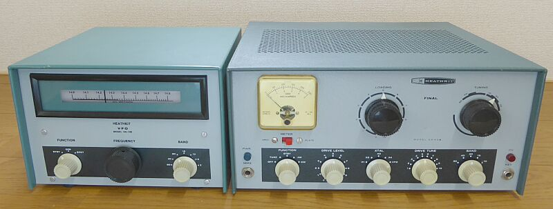 |
Ｈｅａｔｈ-Ｋｉｔより、ＤＸシリーズのＡＭ／ＣＷ送信機としては、ＤＸ-３５が、１９５６年頃より発売されていました
その後、ＤＸ-４０、ＤＸ-６０ そして、このＤＸ-６０Ｂへと変遷がありました
ＤＸ-６０Ｂは、ＡＭ時代の最後、１９６７年から１９７６年にかけて長く提供された商品です
５球構成、終段管は、６１４６ 入力９０Ｗという送信機です
ＡＭは、終段管のスクリーングリッドにかけるキャリアコントロール変調です
アメリカン・ノービスクラス（ＨＦ ＣＷ と、ＶＨＦ ＣＷ＆Ｐｈｏｎｅ 入力７５Ｗまで）向けには、８０・４０・１５ｍバンド ＣＷ にも限定で対応
それも、 ３．７００～３．７５０ＭＨｚ
７．１５０～７．２００ＭＨｚ
２１．１００～２１．２５０ＭＨｚ
という運用周波数の中で、入力７５Ｗ以下での運用が求められました
運用周波数に気を付けてクリスタルを入手して、終段プレート電流１００ｍＡ以下で使うようマニュアルに書かれています（レギュラーオペレーションでは、１５０ｍＡと）
クリスタルは４個内蔵が可能で、外部ＶＦＯ ＨＧ-１０Ｂの用意があります |
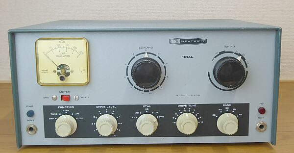 |
ドライブレベル調整（写真左から２つ目のつまみ）
ドライバ管の６ＣＬ６のＳＧ電圧を可変することでパワーの可変を行います
電源通電のＰＬは、－（マイナス）のコントロール電圧から
ここが不点灯なら、真空管が暴走しますからナイスな設計かと思います
高圧通電表示は、６００Ｖのラインから、それぞれネオン管を使って表示させてあります
ＡＣ一時側はＯＮでも、高圧がＯＮにするのはＳＴＢ時を除く・・・こんなファンクション切替から、このようになっているものと考えられます
スタンバイ、キーイングは、ブロックバイアス方式
リレーを内蔵しませんから、ＴＲＩＯ ＴＸ-８８Ａ／Ｄのような、リレーからの火花の発生はありません（ＴＲＩＯのように高圧電源をリレーでＯＮ-ＯＦＦするようにはなっていません）
送受（ＡＮＴ）切替リレーは、内蔵されていません、外付けです
言い方を変えると、これくらいの用意が自分でできないと送受信機を組み合わせて使うことが出来ない、です
ライセンス保持者ならできる！ですね |
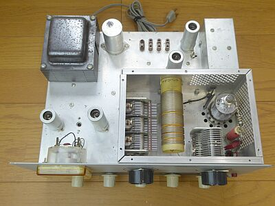 |
終段シールドケースを取り外して写しています
終段管の傍に、中和用のロッドが立っています
懐かしい形状です
キャリアコントロール変調のため、変調トランス・あるいはチョークトランスの類は見当たりません
プレート同調ＶＣにバーニア機構はありません、ダイレクトです
ここは大型つまみで・・・です |
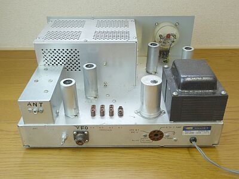 |
Ｍ-Ｒ（多分、前オーナーの改造）は、ＶＦＯ入力
送信出力は、左端のシールドケースの後ろに付いているＲＣＡ-Ｊです
シールドケースの中身は、ＬＰＦです
内蔵クリスタルの形状は、ＦＴ-２３４ ｘ３ と、ＨＣ-６/Ｕ ｘ１です
ＨＣ-６/Ｕ・・・今の表現では、ＨＣ-４８/Ｕですね |
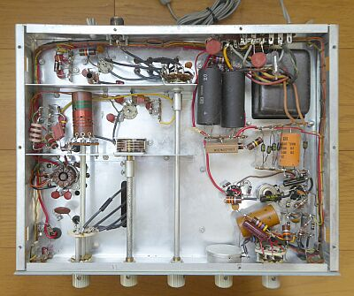 |
ゆったりとした配置です
リア後方からフロントパネルに向かって発振＝＞増力です
昨今の送信機とは逆の流れですね |
|
|
Ｈｅａｔｈ-Ｋｉｔ ＨＧ-１０Ｂ
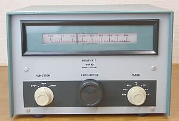 |
ＨＧ-１０Ｂ
３．５ＭＨｚ帯～１４４ＭＨｚ帯の送信機に対応
| ３．５ＭＨｚ帯 ｘ１ |
３．５００～４．０００ＭＨｚ |
| ７ＭＨｚ帯～２８ＭＨｚ帯 ｘ１～ｘ４ |
７．０００～７．４２５ＭＨｚ |
| ５０ＭＨｚ帯 ｘ６ |
８．３３３～９．０００ＭＨｚ |
| １４４ＭＨｚ帯 ｘ１８ |
８．０００～８．２２２ＭＨｚ |
４バンド(７バンド）に切り替えて対応できる、とても器用？なＶＦＯです
関係して、ダイヤル表示もユニークです
|
参考：Hallicrafters ＨＡ-５ |
|
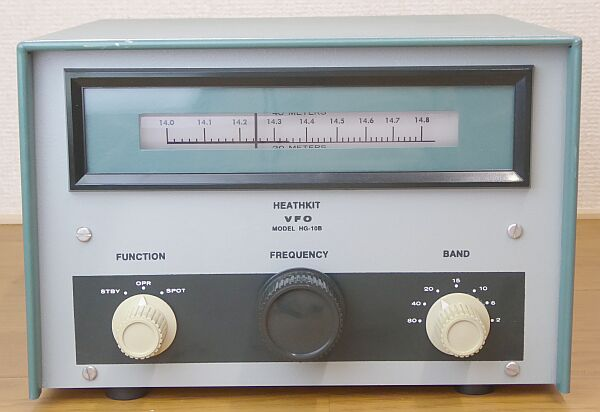 |
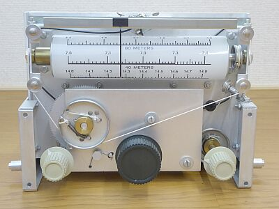 |
ダイヤル表示機構です
バンドＳＷに連動して、表示ダイヤルが回転するようになっています
当時、糸掛け機構が、一つの技術でした |
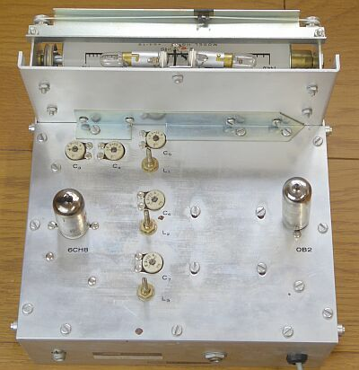 |
シャーシ上面
真空管は、定電圧放電管を含めて２本のみ
発振・バッファは、五極三極の複合管一本で
機構的にしっかりしています |
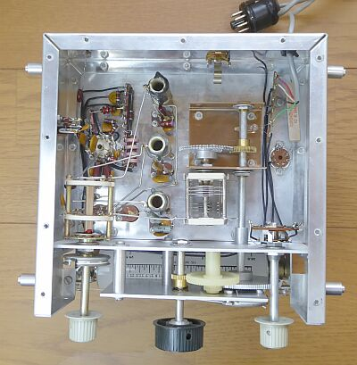 |
シャーシ底面
ダイヤルは、ギア機構によりＶＣを駆動します
おおよそ１３回転でフルスケールです
３．５／７／８ＭＨｚ帯の発振コイル３個が見えます
良い（高周波的に）部品が採用されています
|
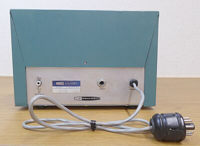 |
リアパネルです
送信機接続（電源給電）用ＧＴプラグ付きケーブル、ＶＦＯ出力（ＲＣＡ-Ｊ）、そしてＣＷ-ＫＥＹ入力ジャックです |
|
|
キャリアコントロール変調
Ｄｒａｋｅ ＴＲ-４シリーズにも採用されていました
が、日本ではあまりなじみがありません
トヨムラ ＱＲＰシリーズくらいしか採用の記憶がありません
ＳＳＢっぽい電流計、パワー計の振れ方をします
変調回路に大きな電力は必要なく、高周波的にも常にフルパワー状態ではありませんから、見かけ上大きな電力が扱えます
本格的には、プレート変調、より変調を深くということで、プレート・スクリーン同時変調、これらが国内では普通に採用されていました |
|
最後に、当時の受信機 ＨＲ-１０Ｂ と並べてみました
日本でいうところの ５９ラインです！？ |
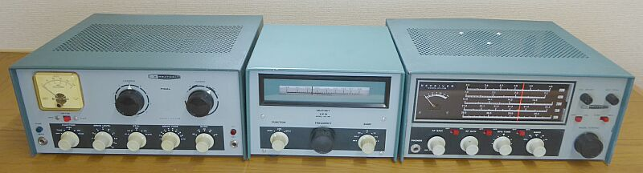 |